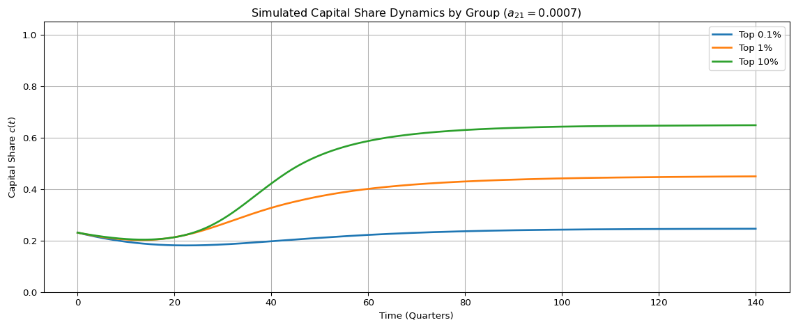

In closed systems, labor and capital exist in mutual interaction. Labor produces output, capital accumulates via labor input, and the feedback between them sustains the economy’s dynamical structure. Such systems can cycle, stabilize, or collapse—but they do so within a conservative phase space.
However, automation introduces a structural mutation. It does not simply accelerate capital accumulation; it changes the topology of the system itself. Capital becomes self-replicating—decoupled from labor. The result is a qualitative shift: the system becomes open, non-conservative, and potentially labor-exclusionary.
We formalize this mutation using a modified Lotka–Volterra interaction system between labor \(L(t)\) and capital \(C(t)\):
\[
\frac{dL}{dt} = a_{1,1} L - a_{1,2} L C,
\]
\[
\frac{dC}{dt} = a_{2,1} L C + a_{2,2} C - a_{2,3} C - a_{2,4} C^2.
\]
Parameters
Each parameter governs a fundamental mechanism:
\(a_{1,1}\): autonomous growth of labor—birth, training, or onboarding.
\(a_{1,2}\): capital-induced labor dissipation—outsourcing, automation, or deskilling.
\(a_{2,1}\): labor-driven capital accumulation—human-centered production.
\(a_{2,2}\): capital self-replication—automation, platform scaling, AI compounding.
\(a_{2,3}\): depreciation—maintenance, obsolescence, or asset decay.
\(a_{2,4}\): nonlinear dissipation within capital—interpreted not merely as diminishing returns, but as elite–elite rivalry, strategic cannibalism, and systemic congestion at the top.
The first equation describes labor’s fate: a positive growth term (\(a_{1,1} L\)) is offset by an absorption term (\(-a_{1,2} L C\)), which accelerates as capital increases. This structure encodes labor’s vulnerability to capital dominance: if capital grows faster than labor, labor becomes increasingly exposed to structural replacement.
The second equation governs capital: it can grow through labor (\(a_{2,1} LC\)), but also through internal momentum (\(a_{2,2} C\)), so long as depreciation (\(a_{2,3} C\)) and dissipation (\(a_{2,4} C^2\)) do not overwhelm it.
The nonlinearity introduced by \(-a_{2,4} C^2\) is essential. Unlike traditional diminishing returns, which reduce marginal productivity, this term reflects conflict internal to the elite class. In financialized economies where capital is abundant and labor is scarce or irrelevant, competition is not against workers—it is against other capital holders. Here, \(C^2\) signifies structural overcrowding at the top: redundant infrastructure, speculative bubbles, or defensive investments to block new entrants. It is not friction from scarcity; it is friction from saturation.
Asymptotic Scenarios
This system admits multiple asymptotic regimes depending on the relationship between parameter values:
1. Classical Mutualism (Closed System)
When \(a_{2,2} = 0\) and \(a_{1,1}, a_{2,1}, a_{1,2}, a_{2,3} > 0\), the system behaves like a classical Lotka–Volterra cycle:
\(L\) grows when capital is low, declines when capital is high.
\(C\) grows when labor is abundant, decays otherwise.
Orbits emerge in the phase space, bounded and conservative.
Interpretation: Capital and labor are locked in mutual dependence. Neither can survive alone.
2. Transitional Instability (Automation Activation)
When \(a_{2,2} > 0\) but still small relative to \(a_{2,1} L\) in most regions, the system begins to destabilize:
\(C\) receives a small automation boost.
If labor weakens slightly, \(C\) continues to grow—less dependent on \(L\).
Feedback begins to tilt asymmetrically toward capital dominance.
Interpretation: The system is no longer symmetric. Capital begins to escape the orbit of labor.
3. Structural Mutation (Irreversibility Activated)
Once \(a_{2,2} C \gg a_{2,1} LC\), capital’s growth is no longer a function of labor.
Conditions for mutation:
\(a_{2,2} > a_{2,3}\): capital can grow faster than it decays,
\(a_{1,2} C > a_{1,1}\): labor is absorbed faster than it reproduces,
\(a_{2,4} C\) is not too large: elite–elite rivalry remains subcritical.
Then:
\(L(t) \to 0\),
\(C(t) \to C^* > 0\) (if friction), or \(\to \infty\) (if friction is weak),
\((L = 0, C = C^*)\) becomes an absorbing state—a terminal attractor.
Interpretation: Labor is not outcompeted—it is made irrelevant. Capital sustains itself and eventually excludes labor from its dynamic logic.
4. Elite Saturation Collapse
If \(a_{2,4}\) becomes too large (e.g., due to capital hoarding, overconcentration, or elite cannibalism):
Even autonomous capital growth stalls,
\(C(t)\) declines after reaching a peak,
System may stabilize at a low-labor, low-capital regime—or collapse entirely.
Interpretation: Overaccumulation leads to implosion. Not because of labor resistance, but from excess at the top.
Structural Irreversibility and Phase Space Mutation
The transition from a labor–capital mutual system to one governed by autopoietic capital dynamics is not gradual—it is governed by a critical threshold beyond which the system undergoes a topological mutation. Prior to this threshold, the system behaves conservatively: labor and capital remain coupled through mutual feedback, and trajectories in the phase space exhibit cyclical or bounded behavior. However, once capital exceeds a structurally determined critical level, the term \(a_{2,2}C\) overtakes labor-mediated growth (\(a_{2,1}LC\)), shifting the dynamical core from interaction to self-replication. At this point, the system’s structure changes discontinuously: closed orbits vanish, invariant sets collapse toward the capital axis, and the line \(L=0\) becomes an absorbing boundary. Labor, once displaced, cannot re-enter the system—a condition of topological irreversibility. The phase space itself no longer supports recovery pathways. This transformation is not a new equilibrium within the same geometry; it is a qualitative reconfiguration of the geometry itself.
This structural interpretation of automation reveals it as a mechanism of decoupling, not simply one of acceleration. It dismantles the co-evolutionary logic of labor and capital, replacing it with an extractive trajectory that systematically erodes labor’s role. As labor vanishes, the site of conflict shifts inward: among capital holders themselves. The nonlinear dissipation term \(a_{2,4}C^2\) captures this emergent elite–elite competition, where positional advantage and resource saturation determine outcomes. The core asymmetry of the system thus moves from inter-class struggle to intra-elite positional rivalry—a transformation concealed in aggregate growth but revealed in structural dynamics.
With this theoretical architecture established, we now turn to the empirical question: does current macroeconomic data exhibit signals of this irreversible transition? In the following section, we estimate the parameters of the system using historical data and identify which regime—closed, transitional, or exclusionary—the contemporary economy occupies within the modeled phase space.
Estimating Parameters with Level Data
The empirical calibration of structural dynamical models often begins with time series data expressed in absolute levels. In the context of labor–capital systems, this typically involves tracking population, capital stock, investment flows, and income components—each representing one component of the theoretical system:
\[
\begin{aligned}
\frac{dL}{dt} &= a_{1,1} L - a_{1,2} L C, \\
\frac{dC}{dt} &= a_{2,1} L C + a_{2,2} C - a_{2,3} C - a_{2,4} C^2.
\end{aligned}
\]
Each parameter in this system has a corresponding economic interpretation, often approximated using national account statistics or industry-level indicators:
Parameter
Interpretation
Empirical Proxy
\(a_{1,1}\)
Endogenous labor growth
Population and participation rates (BLS, UN)
\(a_{1,2}\)
Capital-induced labor absorption
Wage–productivity divergence, labor share trend
\(a_{2,1}\)
Labor-driven capital formation
Profit per worker, reinvestment ratios
\(a_{2,2}\)
Automation-induced capital growth
Robot density, IT capital share, patent counts
\(a_{2,3}\)
Capital depreciation
Consumption of fixed capital (BEA, Eurostat)
\(a_{2,4}\)
Frictions to capital expansion
Diminishing returns, saturation metrics
While conceptually straightforward, level-based estimation encounters several technical and interpretive challenges. Among these:
High sensitivity to measurement errors in levels, especially when working with small changes (e.g., net investment).
Heterogeneity in units and scaling, which complicates system-level identification without extensive normalization.
Implicit steady-state assumptions, particularly when using calibration methods that fix terminal values or target observed ratios (e.g., \(C^*/Y^*\) or \(K/L\) ratios).
Dependence on aggregation conventions, such as capital stock estimation or depreciation schedules, which vary significantly across countries and sources.
A variety of empirical strategies have been employed in this context:
Closed-form identification: Parameters like \(a_{2,3}\) (capital depreciation) can often be directly observed from national accounts.
Time-series regression: Parameters such as \(a_{2,2}\) (automation growth) or \(a_{1,2}\) (labor extraction rate) can be estimated by regressing capital growth or labor share decline on automation-related indicators.
Steady-state calibration: Assuming long-run convergence, one can calibrate parameters to match terminal or average observed values (e.g., setting \(a_{2,4}\) to ensure bounded \(C\) given observed capital-output ratios).
Bayesian updating: Priors from the macroeconomic literature (e.g., Solow-type growth parameters) are updated using observed data.
System-level structural estimation: Full-model techniques such as GMM or maximum likelihood estimation (MLE) are applied to estimate coupled ODEs from observed \((L_t, C_t)\) time series.
Despite its prevalence, the level-based framework is limited in its ability to track distributional dynamics or relative concentration patterns, particularly in systems undergoing structural mutation. In such cases, absolute levels may grow exponentially while the internal composition of the system changes qualitatively.
To address these limitations, the next section introduces a share-based estimation strategy that reinterprets elite capital concentration data as a proxy for system-level capital dominance, enabling estimation of nonlinear dynamics via normalized replicator-like forms. This approach aligns more naturally with inequality-focused modeling, where relative shares and structural saturation matter more than total quantities.
Estimating Parameters with Share Data
Traditional macroeconomic estimation strategies are typically rooted in level data—aggregate capital stock, total output, labor force levels—used to calibrate dynamic models of production, accumulation, and distribution. While effective in certain contexts, this approach suffers from scaling inconsistencies, comparability issues across time, and sensitivity to nominal shocks. Moreover, level data fails to reveal the internal stratification of economic systems—particularly the distribution of capital across heterogeneous agents.
To address this, we introduce a share-based approach. Rather than modeling the absolute size of capital or labor, we model their relative shares:
Capital share: \(c(t) = \frac{C(t)}{C(t) + L(t)}\)
Labor share: \(\ell(t) = 1 - c(t)\)
This reframing allows us to interpret economic dynamics in terms of structural positioning and relative dominance, rather than absolute growth. Importantly, this representation is invariant to total system size, rendering it more robust for long-term analysis and cross-group comparison.
U.S. Wealth Share Data (1989–2024, Quarterly)
We utilize quarterly data from the Federal Reserve’s Distributional Financial Accounts (via FRED) to construct empirical capital share trajectories for three elite percentile groups:
Top 0.1% Net Wealth Share (WFRBSTP1300)
Top 1% Net Wealth Share (WFRBST01134)
Top 10% Net Wealth Share, computed as the sum of top 1% and 90–99% (WFRBSN09161)
These series serve as empirical proxies for the capital share\(c(t)\) held by each group. Corresponding labor shares are then computed as \(\ell(t) = 1 - c(t)\).
This share-based framing bypasses issues with raw levels (GDP deflators, capital depreciation schedules, labor hours) and instead centers the analysis on relative control over accumulated wealth—a key structural feature in capitalist systems.
Share-Based Dynamics
The structural labor–capital model is given in level terms as:
\[
\begin{aligned}
\frac{dL}{dt} &= a_{11} L - a_{12} L C, \\
\frac{dC}{dt} &= a_{21} L C + a_{22} C - a_{23} C - a_{24} C^2.
\end{aligned}
\]
Define total system size \(S(t) = L(t) + C(t)\) and the capital share: \[
c(t) = \frac{C(t)}{S(t)}.
\]
By differentiating this definition with respect to time: \[
\frac{dc}{dt} = \frac{\dot{C} S - C \dot{S}}{S^2}.
\]
Substituting the dynamics: - \(\dot{C} = a_{21} L C + a_{22} C - a_{23} C - a_{24} C^2\) - \(\dot{L} = a_{11} L - a_{12} L C\) - So \(\dot{S} = \dot{L} + \dot{C}\)
Now let \(C = c S\), \(L = (1 - c) S\) to express everything in terms of \(c(t)\) and \(S(t)\).
Assuming \(a_{21} \approx 0\) (negligible labor-driven capital growth) and quasi-stationary \(S(t)\) over short windows, the expression simplifies to:
\[
\frac{dc}{dt} \approx c (a_{22} - a_{24} c).
\]
This replicator-type equation captures the nonlinear interplay between:
Self-replicating capital (via \(a_{22}\)), and
Intra-elite saturation effects (via \(a_{24}\)).
Empirically, this continuous form becomes: \[
\frac{\Delta c_t}{c_t} \approx a_{22}(t) - a_{24}(t) c_t.
\]
By running rolling-window OLS regressions (e.g., 20 quarters), we estimate \(a_{22}(t)\) and \(a_{24}(t)\) as time-varying structural coefficients, capturing technological change, financial regime shifts, and institutional transitions.
To estimate the remaining parameters, we turn to the full coupled system. Normalizing the labor-capital system in share terms:
For capital (expanded): \[
\frac{\Delta c_t}{c_t} = a_{21}(t) \ell_t + a_{22}(t) - a_{23}(t) - a_{24}(t) c_t + \varepsilon_t.
\]
Given previously estimated \(a_{22}(t)\) and \(a_{24}(t)\), and setting \(a_{23}(t) = 0.025\) (fixed quarterly depreciation), we identify:
\(a_{11}(t), a_{12}(t)\): from labor-share regression,
\(a_{21}(t)\): by back-solving from capital equation residuals.
Empirical Findings
\(a_{22}(t)\) rises sharply during known automation epochs: dot-com boom, smartphone era, and post-2020 AI expansion.
\(a_{24}(t)\) is consistently positive and increasing with percentile, indicating growing intra-elite competition.
\(a_{21}(t) \approx 0\) across all groups, sometimes on the order of \(10^{-7}\) or lower.
This implies that capital is self-reproducing, with minimal dependence on labor—a hallmark of late-stage automation economies.
However, setting \(a_{21} = 0\) creates degenerate dynamics: over time, both capital and labor vanish. Surprisingly, even capital collapses without minimal labor input.
By setting \(a_{21} = 0.0007\) (small but positive), simulations match observed empirical tail behavior in \(c(t)\)—showing that even negligible labor-capital coupling is structurally vital for long-run viability.
These findings underscore the fragility of modern accumulation systems. The capital-labor system is not sustained by productivity, but by network-dependent feedback loops. Small structural parameters—such as \(a_{21}\)—govern the existence of long-run attractors.
Policy interventions must thus go beyond redistribution. They must alter structural parameters: - Lower \(a_{12}\) to reduce labor extraction, - Cap \(a_{24}\) to prevent elite overaccumulation, - Increase \(a_{21}\) via labor-linked investment, - Shift \(a_{22}\) toward inclusive automation.
This model reframes inequality not as an outcome of imbalance, but as a phase-space feature—a geometrical consequence of structural dynamics. In summary, share-based empirical modeling reveals structural dependencies invisible in level-data systems. The future of capital depends not on output maximization, but on the topology of feedback and the fragility of replication.
Plots
US Wealth Share Data
Code
import pandas_datareader.data as webimport pandas as pdimport numpy as npimport matplotlib.pyplot as pltfrom scipy.integrate import solve_ivpfrom scipy.stats import trim_mean, mode# Define the time rangestart_date ="1989-07-01"end_date ="2024-10-01"# Download data directly for each groupdata = {}data['Top 0.1%'] = web.DataReader('WFRBSTP1300', 'fred', start_date, end_date)data['Top 1%'] = web.DataReader('WFRBST01134', 'fred', start_date, end_date)data['Top 90-99%'] = web.DataReader('WFRBSN09161', 'fred', start_date, end_date)# Combine Top 1% and 90-99% to compute Top 10%top_10 = pd.DataFrame(index=data['Top 1%'].index)top_10['Top 10%'] = data['Top 1%']['WFRBST01134'] + data['Top 90-99%']['WFRBSN09161']# Combine all into a single DataFrame for analysisdf = pd.DataFrame(index=data['Top 0.1%'].index)df['Top 0.1%'] = data['Top 0.1%']['WFRBSTP1300']df['Top 1%'] = data['Top 1%']['WFRBST01134']df['Top 10%'] = top_10['Top 10%']df = df.dropna()print("Sample Start: ", start_date)print("Sample End: ", end_date)df.head()
Sample Start: 1989-07-01
Sample End: 2024-10-01
Table 1: Quarterly net wealth share data (Top 0.1%, 1%, and 10%) are retrieved directly from the FRED database and used to compute normalized capital share trajectories over the period 1989Q3 to 2024Q4.
Top 0.1%
Top 1%
Top 10%
DATE
1989-07-01
8.6
22.9
60.9
1989-10-01
8.7
23.0
60.9
1990-01-01
8.6
22.8
60.6
1990-04-01
8.7
22.9
60.6
1990-07-01
8.5
22.5
60.0
Time-Varying Parameter Estimates (All Groups)
Code
# Time-varying parameter estimation for each wealth share group, using a rolling window regression on the nonlinear replicator-transformed system. Parameters $a_{2,2}(t)$ and $a_{2,4}(t)$ are inferred from capital share growth, while $a_{1,1}(t)$ and $a_{1,2}(t)$ are extracted from labor share contraction. Residual dynamics yield estimates of $a_{2,1}(t)$ and implied $a_{2,3}(t)$.# Calculate c(t) and l(t) for each groupct_01 = df['Top 0.1%']ct_1 = df['Top 1%']ct_10 = df['Top 10%']lt_01 =1- ct_01lt_1 =1- ct_1lt_10 =1- ct_10# Define a function to compute rolling parameter estimatesdef estimate_parameters(c_t, window=20, depreciation=0.025): c_t = c_t.dropna() l_t =1- c_t dc = c_t.diff() dl = l_t.diff() c_t_lag = c_t.shift(1) l_t_lag = l_t.shift(1) rel_dc = (dc / c_t_lag).dropna() rel_dl = (dl / l_t_lag).dropna() df_rolling = pd.DataFrame({'c': c_t_lag,'l': l_t_lag,'dc_rel': rel_dc,'dl_rel': rel_dl }).dropna() results = []for i inrange(window, len(df_rolling)): window_df = df_rolling.iloc[i - window:i] X_c = np.vstack([np.ones(window), -window_df['c']]).T y_c = window_df['dc_rel'] a22, a24 = np.linalg.lstsq(X_c, y_c, rcond=None)[0] X_l = np.vstack([np.ones(window), -window_df['c']]).T y_l = window_df['dl_rel'] a11, a12 = np.linalg.lstsq(X_l, y_l, rcond=None)[0] a21_minus_a23 = y_c - (a22 - a24 * window_df['c']) X_a21 = window_df['l'] a21 = np.mean(a21_minus_a23 / X_a21) a23 = a21 - depreciation # using assumed depreciation results.append({'date': df_rolling.index[i],'a11': a11,'a12': a12,'a21': a21,'a22': a22,'a23': a23,'a24': a24 })return pd.DataFrame(results).set_index('date')# Estimate for all three groupsres_df_01 = estimate_parameters(ct_01, window=20)res_df_1 = estimate_parameters(ct_1, window=20)res_df_10 = estimate_parameters(ct_10, window=20)
Figure 1: Estimated time-varying parameters for each wealth percentile group, based on rolling window regressions. Each panel corresponds to one structural parameter of the labor–capital dynamic system. Differences across percentile groups reflect heterogeneity in structural regimes, such as automation dominance (\(a_{2,2}\)) or labor extraction intensity (\(a_{1,2}\)).
Figure 2: Empirical distribution of estimated parameters across Top 0.1%, Top 1%, and Top 10% wealth share groups. Each subplot overlays the histogram of a single parameter’s rolling estimates for all three groups. The visual comparison reveals systematic differences in structural dynamics across percentile tiers.
Parameter Summary Table: Group-Wise Statistics by Parameter
Table 2: Parameter-wise summary statistics across elite groups (Top 0.1%, Top 1%, Top 10%), including median, trimmed mean, and mode for each parameter.
median
trimmed_mean
mode
group
Top 0.1%
Top 1%
Top 10%
Top 0.1%
Top 1%
Top 10%
Top 0.1%
Top 1%
Top 10%
parameter
a11
0.12041
0.13333
0.10653
0.11903
0.18327
0.11065
-0.17888
-0.07761
-0.14894
a12
0.01050
0.00460
0.00160
0.00995
0.00626
0.00167
-0.01510
-0.00356
-0.00211
a21
-0.00000
-0.00000
0.00000
-0.00000
-0.00000
-0.00000
-0.00001
-0.00000
-0.00000
a22
0.10940
0.12865
0.10479
0.10796
0.17678
0.10894
-0.16071
-0.07477
-0.14669
a23
0.02500
0.02500
0.02500
0.02500
0.02500
0.02500
0.02500
0.02500
0.02500
a24
0.00950
0.00443
0.00158
0.00902
0.00604
0.00164
-0.01356
-0.00343
-0.00208
Simulated System Dynamics with Calibrated Labor-Driven Capital Growth (\(a_{21} = 0.0007\))
Code
from scipy.integrate import solve_ivpimport matplotlib.pyplot as pltimport numpy as np# Define the system of ODEs with fixed a21 = 0.0007def simulate_system(params, L0=10, C0=3, t_span=(0, 140), t_steps=2000):def system(t, y): L, C = y a11, a12, a21, a22, a23, a24 = ( params["a11"], params["a12"], 0.0007, # fixed! params["a22"], params["a23"], params["a24"] ) dLdt = a11 * L - a12 * L * C dCdt = a21 * L * C + a22 * C - a23 * C - a24 * C**2return [dLdt, dCdt] t_eval = np.linspace(t_span[0], t_span[1], t_steps) sol = solve_ivp(system, t_span, [L0, C0], t_eval=t_eval)return sol.t, sol.y[0], sol.y[1]# Simulations for each groupt, L_01, C_01 = simulate_system(params_top_01)_, L_1, C_1 = simulate_system(params_top_1)_, L_10, C_10 = simulate_system(params_top_10)# Normalize to capital share c(t)c_01 = C_01 / (L_01 + C_01)c_1 = C_1 / (L_1 + C_1)c_10 = C_10 / (L_10 + C_10)# Plot: Capital share over timeplt.figure(figsize=(12, 5))plt.plot(t, c_01, label="Top 0.1%", linewidth=2)plt.plot(t, c_1, label="Top 1%", linewidth=2)plt.plot(t, c_10, label="Top 10%", linewidth=2)plt.title("Simulated Capital Share Dynamics by Group ($a_{21} = 0.0007$)")plt.xlabel("Time (Quarters)")plt.ylabel("Capital Share $c(t)$")plt.ylim(0, 1.05)plt.grid(True)plt.legend()plt.tight_layout()plt.show()

Figure 3: Simulated time-domain capital share dynamics \(c(t)\) for each percentile group using calibrated \(a_{21} = 0.0007\) and median parameter values.